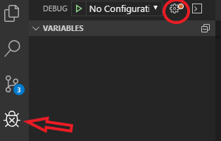
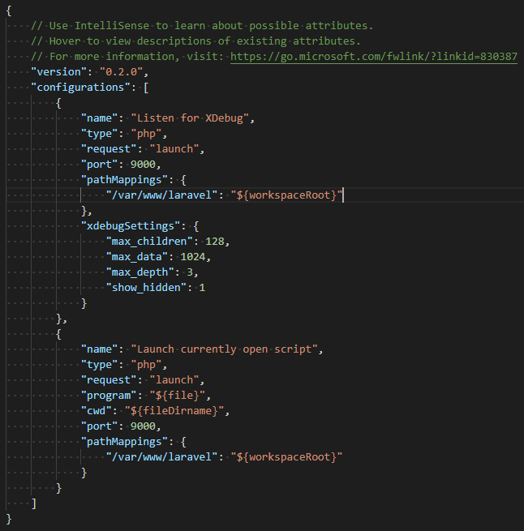

# 設定 VSCode XDebug Laradock
# 這篇主要是紀錄如何設定 VSCode 在 Laradock 環境中使用 XDebug
# Laradock Setting
打開 laradock/workspace/xdebug.ini 與 laradock/php-fpm/xdebug.ini
1
2
3
4
5
6
7
8
9
10
11
12
13
14
15; xdebug.remote_host=dockerhost
xdebug.remote_host=10.0.75.1
; xdebug.remote_connect_back=1
xdebug.remote_connect_back=0
xdebug.remote_port=9000
; xdebug.idekey=PHPSTORM
xdebug.idekey=VSCODE
; xdebug.remote_autostart=0
; xdebug.remote_enable=0
; xdebug.cli_color=0
; xdebug.profiler_enable=0
xdebug.remote_autostart=1
xdebug.remote_enable=1
xdebug.cli_color=1
xdebug.profiler_enable=1
在 .env 中找到
1
2
3
4WORKSPACE_INSTALL_XDEBUG=true
PHP_FPM_INSTALL_XDEBUG=true
DOCKER_HOST_IP=[your local ip address] # default 10.0.75.1
重 build workspace 與 php-fpm (需要一些時間)。
1
docker-compose build --no-cache workspace php-fpm
# VSCode Setting
安裝 PHP Debug 套件
點選小齒輪，創建 php debug 設定檔。


注意到 pathMappings ， /var/www/laravel 是 docker 中的路徑，要映射到你的專案 ${workspaceRoot} 。
# 參考
如何設定 VSCode XDebug 在 laradock 環境上
laradock 是為 laravel 在 docker 上打造的 php 環境，本篇介紹如何使用 vscode xdebug 工具搭配 laradock 做為開發環境 open laradock/workspace/xdebug.ini… blog.scottchayaa.com